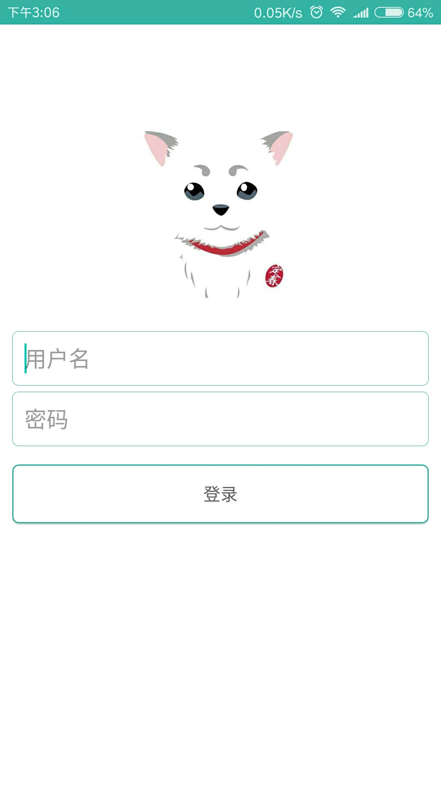
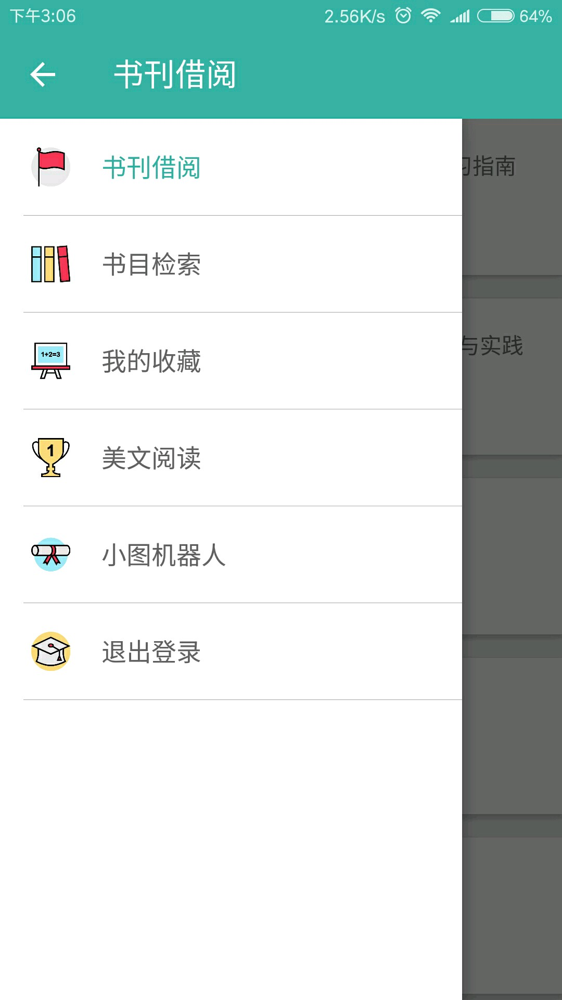
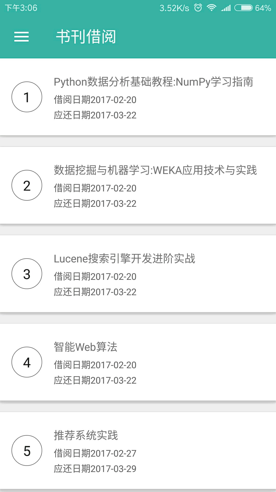
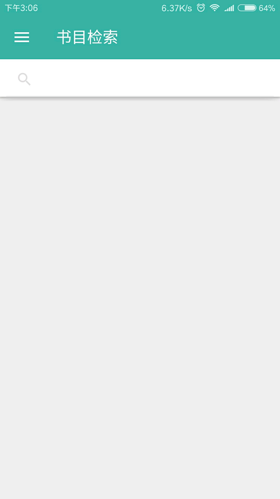
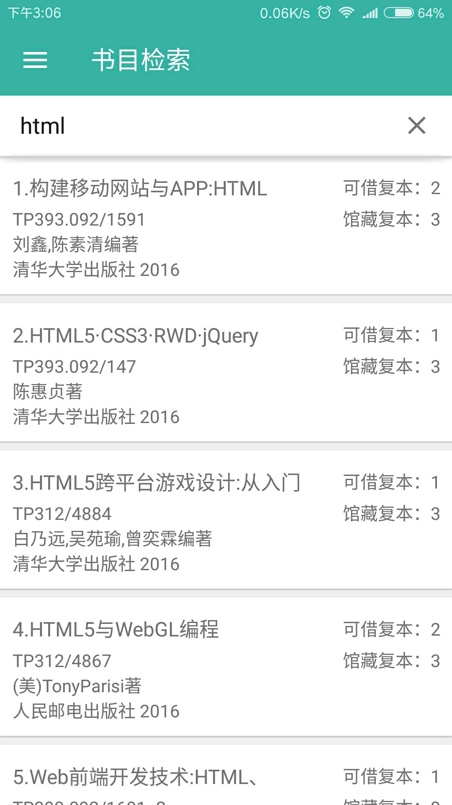
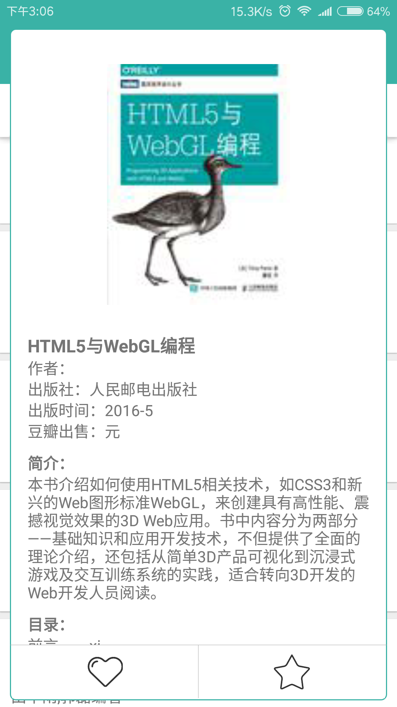
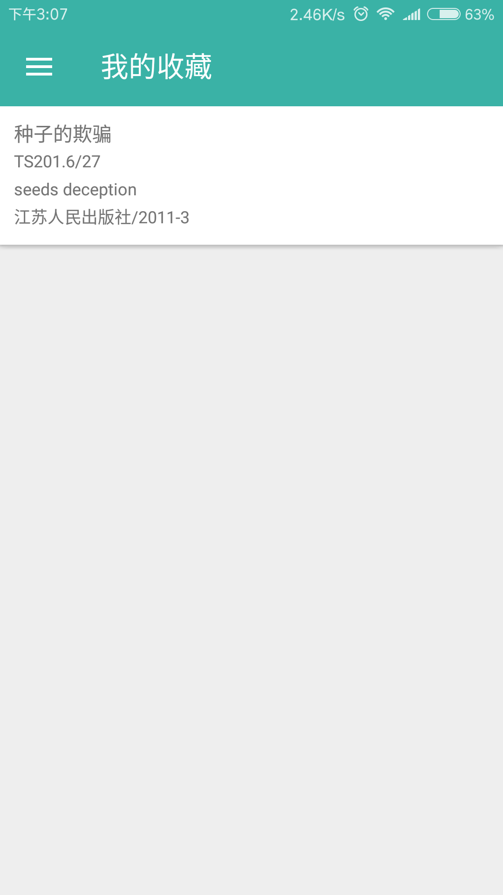
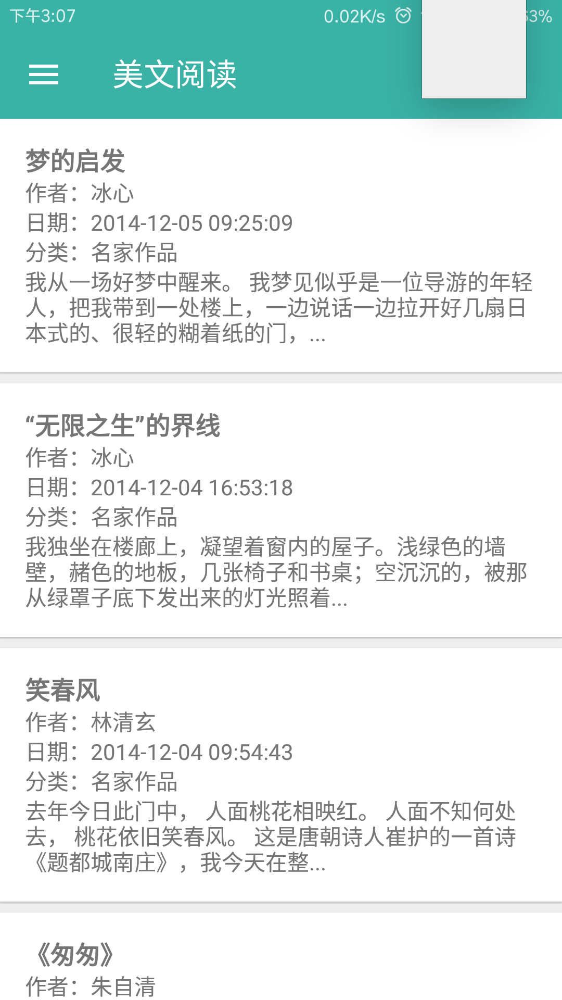

掌上图书馆-山理工
模拟登录山理工图书馆，并提供续借、搜索、收藏、美文阅读、机器人聊天等功能！
界面展示
精美界面app提供了精美的界面（至少我看着是这样），而且小巧易用，绝不占用用户的内存空间！
- 
- 
- 
- 
- 
- 
- 
- 
技术解析
模拟登录使用httpclient-android模拟登录，注意是httpclient-android。(在android api 23里去掉了，所以需要一些配置)
自定义View继承特定的View打造适合自己的View
android5.0动画大量使用了android5.0的动画，所以低版本的系统不能使用
爬虫技术在美文阅读模块使用爬虫爬取了一个网站的3000多篇文章
其他没有了？
遇到的问题
模拟登录上面说到使用httpclient-android进行模拟登录，这是有原因的。一开始我是在eclipse上写的模拟登录的代码，成功登录到图书馆，用的httpclient。 但是把代码拷到Android项目中就出现异常，是android虚拟机报错。具体是什么错误我也不太清楚，是网络安全方面的。
异常处理以前也没太注意过处理异常，在这里可是上了一课。由于要进行网络请求，会抛出各种网络异常，一开始没怎么处理，捕获以后就放那了。到运行的时候才发现app太脆弱了，一言不合就闪退。我给函数添加了返回值，返回false或null，遇到异常就让函数返回，让接收者根据返回的结果作出判断。